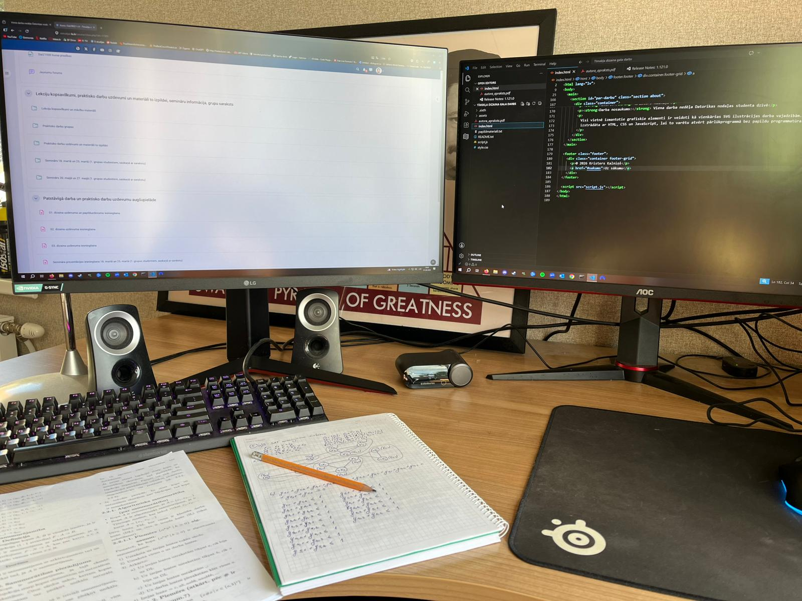
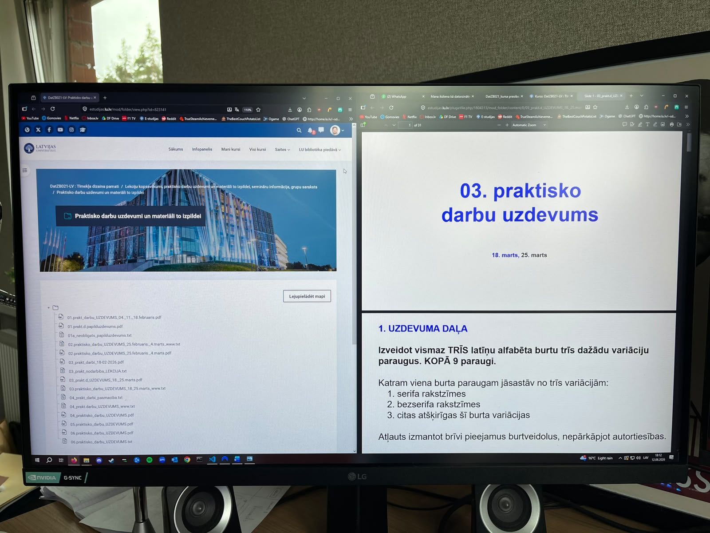
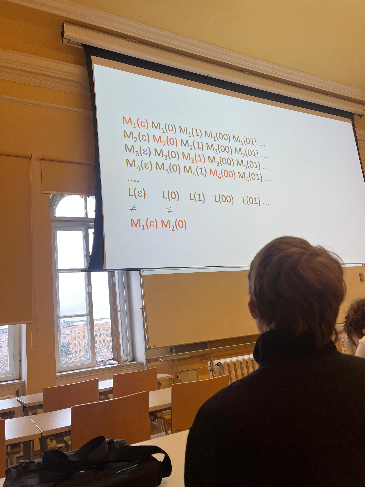
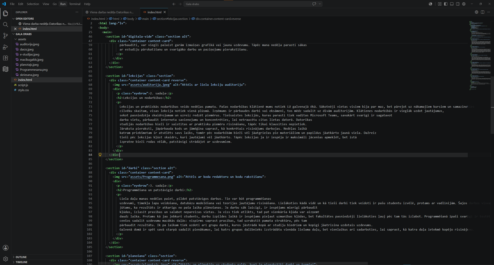
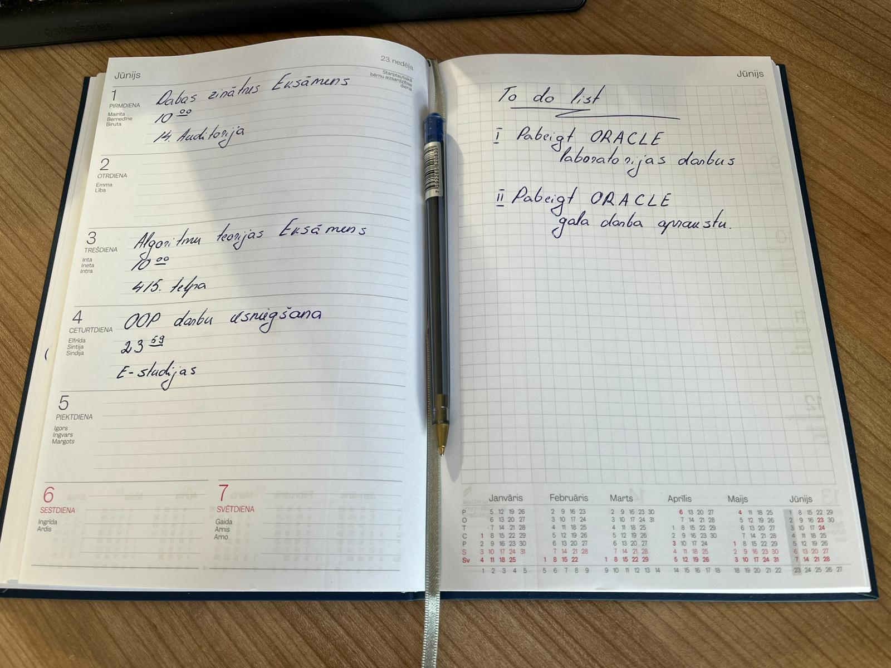
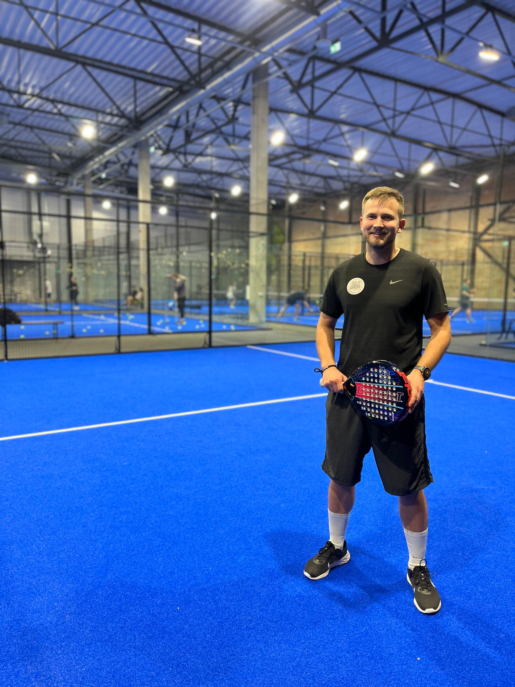
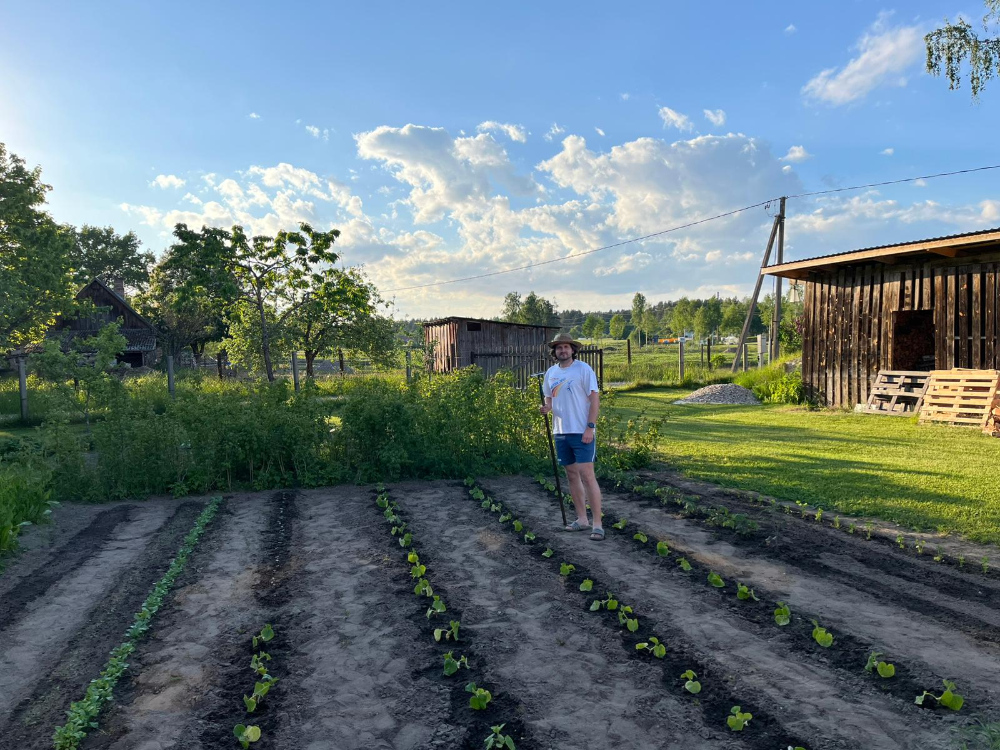

Patstāvīgais darbs
Viena darba nedēļa Datorikas nodaļas studenta dzīvē
Šis vietnes mēŗkis ir parādīt vienu tipisku nedēļu Datorikas nodaļas studenta dzīvē. Mana nedēļa parasti sākas ar studija plāna un lekciju grafika pārskatīšanu, bet turpinās ar dažādiem uzdevumiem, kas jāizpilda gan lekciju laikā, gan ārpus auditorijas. Šīs lapas mērķis ir parādīt ar kādām situācijām, uzdevumu dažādību un izaicinājumiem es saskaros kā students, kurš papildus studijām arī strādā.


1. sadaļa
Digitālā studiju vide
Studiju nedēļā digitālā vide ir viens no svarīgākajiem palīgiem. Datorikas studentiem tā ir galvenokārt estudijas vides. Pirms lekcijām studenti pārbauda e-studijas, apskata ievietotos materiālus un seko līdzi uzdoto darbu termiņiem. Tur gandrīz vienmēr atrodamas lekciju prezentācijas, uzdevumu apraksti, iesniegšanas vietas un pasniedzēju paziņojumi. Digitālā vide palīdz saprast, kas konkrētajā nedēļā ir jāizdara un kurus darbus nedrīkst atlikt uz pēdējo brīdi. Paralēli tiek izmantotas arī citas tiešsaistes platformas, piemēram, video lekciju rīki (Microsoft Teams), koplietojami dokumenti un programmēšanas vides. Šāda sistēma ļauj mācīties elastīgāk, tomēr prasa uzmanību un pašdisciplīnu. Ja paziņojumi netiek regulāri pārbaudīti, var viegli palaist garām izmaiņas grafikā vai jaunu uzdevumu. Tāpēc mana nedēļa parasti sākas ar estudiju pārskatīšanu un svarīgāko darbu un paziņojumu pierakstīšanu.

2. sadaļa
Lekcijas un nodarbības
Lekcijas un praktiskās nodarbības veido nedēļas pamatu. Pašas nodarbības klātienē mums notiek LU galvenajā ēkā. Sākotnēji vietas visiem bija par maz, bet pārejot uz nākamajiem kursiem un samazinoties cilvēku skaitam, visas lekcija notiek vienā plūsmā. Izņēmums ir pārbaudes darbi vai eksāmeni, tos mēdz sadalīt uz divām auditorijām. Klātienes nodarbībās ir vieglāk uzdot jautājumus, sekot pasniedzēja skaidrojumam un uzreiz redzēt piemērus. Tiešsaistes lekcijās, kuras parasti tiek vadītas Microsoft Teams, savukārt svarīgi ir sagatavot darba vietu, pārbaudīt interneta savienojumu un koncentrēties, lai netraucētu citas lietas datorā. Datorikas studijās nodarbības bieži ir saistītas ar praktisku piemēru risināšanu, tāpēc tikai klausīties nepietiek. Jāraksta pieraksti, jāpārbauda kods un jāmēģina saprast, kā konkrētais risinājums darbojas. Nedēļas laikā katram priekšmetam ir atvēlēts savs laiks, tomēr pēc nodarbībām bieži vēl jāatgriežas pie materiāliem un papildus jāatkārto jaunā viela. Dažreiz tieši pēc lekcijas kļūst skaidrs, kuri jautājumi vēl jāatkārto. Tāpēc lekcijas ja ir iespēja ir maksimāli jācenšas apmeklēt, bet īstā izpratne bieži rodas vēlāk, patstāvīgi strādājot ar uzdevumiem.

3. sadaļa
Programmēšana un patstāvīgie darbi
Liela daļu manas nedēlas paiet, pildot patstāvīgos darbus. Tie var būt programmēšanas uzdevumi, tīmekļa lapu veidošana, datubāzu modelēšana vai teorijas jautājumu risināšana. Lielākoties kādā vidē un kā tieši darbi tiek veidoti ir pašu studentu izvēlē, protams ar vadlīnijām. Šajos darbos visvairāk jūtams, ka rezultāts ir atkarīgs no paša laika plānošanas. Ja darbu sāk laicīgi, ir iespējams mierīgi pārbaudīt kļūdas, izlasīt prasības un salabot nepareizas vietas. Ja viss tiek atlikts, tad pat vienkārša kļūda var aizņemt daudz laika. Protams kā jau jebkurš students, darbu izpildes laikā ir iespējams pieļaut uzmanības kļūdas, bet fakultātes pasniedzēji lielākoties ļauj pēc tam tās izlabot. Programmēšanā īpaši svarīgi ir testēt risinājumu pakāpeniski, nevis tikai pašās beigās. Es parasti cenšos sadalīt uzdevumu mazākās daļās: vispirms saprast prasības, tad uzrakstīt pamata struktūru, pēc tam pārbaudīt rezultātu. Ik pa laikam tiek uzdoti arī grupu darbi, kuros jāstrādā kopā ar studiju biedriem un kopīgi jāatrisina uzdotais uzdevums. Galvenā domā ir spēt savā starpā sadalīt pienākumus, lai katrs grupas dalībnieks izstrādātu vienāda lieluma daļu, bet vienlaikus arī sadarboties, lai saprast, kā katra daļa ietekmē kopējo risinājumu.

4. sadaļa
Nedēļas plānošana
Lai studiju nedēļa būtu pārskatāma, svarīga ir plānošana. Nedēļas sākumā ir jāpārskata lekciju sarakstu, darbu termiņus un pasniedzēju sūtīto informāciju. Vienkāršs plāns palīdz saprast, kuras dienas būs noslogotākas un kad iespējams atvēlēt laiku atpūtai. Es plānošanā personīgi izmantoju plānotāju, bet citi studiju biedri izvēlas kalendārus un atgādinājumu aplikācijas. Tipiski ieraksti plānotājā ir tuvākie pārbaudes darbi, to sākumu laiks un telpa vai vieta kurā tas tiks organizēts, bet ir kursabiedri kas savus plānotājus papildina ar vēl detalizētēku informāciju. Ir bijušas situācijas kad studenti palaiž garām tieši norises vietu un laiku. Tāpat labs veids ir turēt pierakstos veicamo patstāvīgo darbu sarakstu. Darba izsvītrošana pēc darba iesniegšanas ir viena no labākajām sajūtām katram studentam.

5. sadaļa
Studenta ikdiena ārpus lekcijām
Lai gan studijas aizņem daudz laika, nevar viss laiks tikt pavadīts tikai mācību procesā. Tas kā nedēļas garumā tiek pavadīts laiks pēc lekcijām ir atkarīgs no katra studenta velmēm un interesēm. Es studijām papildus nedēļas garumā nodarbojos ar sportu kas palīdz man uzsturēt sevi labā fiziskā formā un ļauj izvēdināt galvu pēc garas mācību dienas. Galvenie divi sporta veidi ar ko nodarbojos ir Padel tennis, kas pēdējos 2 gados kļuvis ļoti populārs un vieglatlētika. Tāpat kā citi studenti, papildus mācībām arī strādāju, lai segtu ikdienas izdevumus. Strādāju kā vieglatlētikas treneris, jo vairāk kā 10 gadus nodarbojos ar vieglatlētiku profesionāli. Darbs un studijas reizēm var būt izaicinājums, bet tas arī māca laika plānošanu un prioritāšu noteikšanu. Ir svarīgi atrast līdzsvaru starp mācībām, darbu un atpūtu, lai nedēļas laikā nejustos pārslogots.

6. sadaļa
Nedēļas noslēgums un secinājumi
Nedēļas nobeigumā ja viss ir ritējis pēc plāna, tad ir iespēja pilnībā atpūsties no studiju procesa un veltīt laiku saviem hobijiem, man personīgi tas ir rušināties pa savu dārzu. Priekš manis tas ir terapētiski un ļauj atslēgties no ikdienas raizēm un izaicinājumiem. Tāpat nedēļas nogale ir lielisks laiks lai atskatītos uz iepriekšējā nedēļā paveikto par to kas ir sanācis, kas nav un ko varētu darīt lai uzlabotu savu darba procesu. Ir svarīgi atzīmēt, ka katra nedēļa var būt atšķirīga un ne vienmēr viss notiks pēc plāna,var sanākt arī intensīva darbu rakstīšana nedēlās nogalē, bet tā ir daļa no studiju procesa un dzīves kopumā. Galvenais ir mācīties no pieredzes un turpināt attīstīties.
Par darbu
Autors: Kristers Kalniņš
Darba nosaukums: Viena darba nedēļa Datorikas nodaļas studenta dzīvē
Vietnē izmantotie grafiskie attēli ir autora paša fotografēti vai iegūti veicot ekrānšāviņus no interneta resursiem. Vietne ir izstrādāta ar HTML, CSS un JavaScript. Vairāk par darbu lasīt aprakstā.